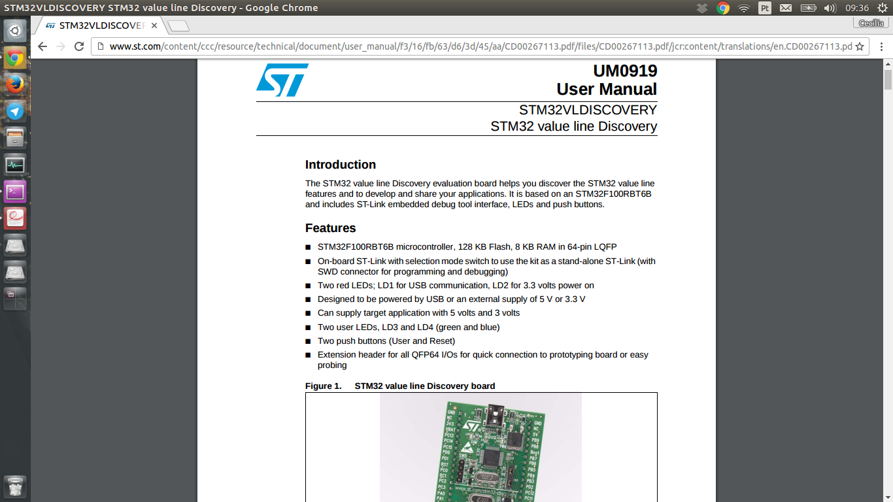
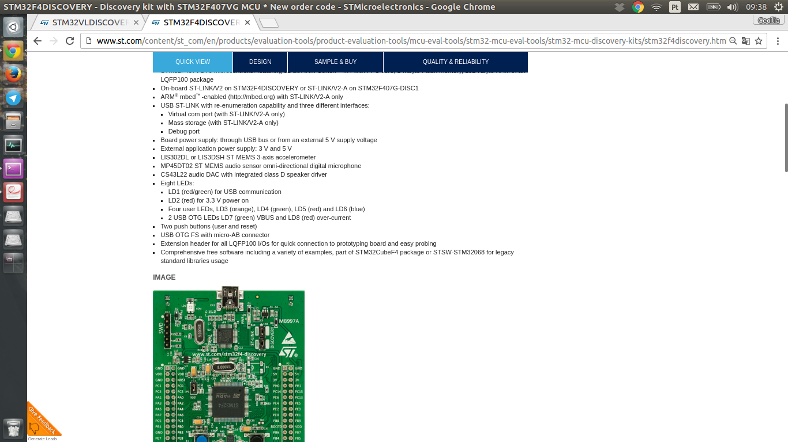

TCC
Table of Contents
- 1. TEMA
- 2. TITULO
- 3. OBJETIVO GERAL
- 4. SCHEME
- 5. DONE PICOBIT - pdf
- 6. TODO R5RS
- 7. TODO Compiler files study
- 8. TODO ARM - livro
- 9. TODO tanenbaum - book
- 10. TODO Virtual machines
- 11. TODO PICOBIT SCHEME COMPILER
- 12. TODO PICOBIT VM
- 13. TODO SIXPIC C COMPILER
- 14. TODO Comparation picobit - picoufu
- 14.1. Analysis.rkt
- 14.2. Asm.rkt
- 14.3. Assemble.rkt
- 14.4. Ast.rkt
- 14.5. Back-end.rkt
- 14.6. Code-gen.rkt
- 14.7. Comp.rkt
- 14.8. Env.rkt
- 14.9. Front-end.rkt
- 14.10. Gen.config.rkt
- 14.11. Gen.library.rkt
- 14.12. Gen.primitives.rkt
- 14.13. Ir.rkt
- 14.14. Library.scm
- 14.15. Parser.rkt
- 14.16. Picobit.rkt
- 14.17. Primitives.rkt
- 14.18. Reader.rkt
- 14.19. Scheduling.rkt
- 14.20. Tree-shaker.rkt
- 14.21. Utilities.rkt
1 TEMA
Maquina virtual em sitemas embacados
2 TITULO
Sistema de virtualização para sistemas embarcados, utilizando a linguagem de programação Scheme.
3 OBJETIVO GERAL
4 SCHEME
Scheme
Scheme is a statically scoped and properly tail-recursive dialect of the Lisp programming language invented by Guy Lewis Steele Jr. and Gerald Jay Sussman. It was designed to have an exceptionally clear and simple semantics and few different ways to form expressions. A wide variety of programming paradigms, including imperative, functional, and message passing styles, find convenient expression in Scheme.
Scheme was one of the first programming languages to incorporate first class procedures as in the lambda calculus, thereby proving the usefulness of static scope rules and block structure in a dynamically typed language. Scheme was the first major dialect of Lisp to distinguish procedures from lambda expressions and symbols, to use a single lexical environment for all variables, and to evaluate the operator position of a procedure call in the same way as an operand position. By relying entirely on procedure calls to express iteration, Scheme emphasized the fact that tail-recursive procedure calls are essentially goto's that pass arguments. Scheme was the first widely used programming language to embrace first class escape procedures, from which all previously known sequential control structures can be synthesized. More recently, building upon the design of generic arithmetic in Common Lisp, Scheme introduced the concept of exact and inexact numbers. Scheme is also the first programming language to support hygienic macros, which permit the syntax of a block-structured language to be extended reliably.
5 DONE PICOBIT - pdf
Terminar de ler o artigo oficial do picobit.
5.1 DONE Foto folha
- GOOGLE-PHOTOS
Tirar foto da folha.
- SIXPIC C compiler é somente para PIC18.
- Nesse caso vamos usar o cross-compiler: arm-none-eabi-gcc.
5.2 TODO Comentarios
- Por causa do ambiente com tamanho de codigo limitado, todo projeto foi voltado a gerar bytecode compact code.
- O bytecode resultante da scheme compiler é menor q o machine code, ou seja, o tamanho da entrada da VM é menor q a saída.
- Como o projeto tem total controle, virtual machine e C compiler, podemos adaptar um ao outro.
- A maquina virtual é escrita em C, tornando fácil a portabilidade entre hardwares, esse trabalho: STM32F1 e STM32F4.


- Implementação do R5RS, tem: macros, closures, listas, gerenciamento de memória, predicados de alta ordem, inteiros de precisão, strings, etc.
- Não foi implementado (visando ser mais compacto, são coisa não uteis em Embedded Systems-ES): ponto flutuante, file I/O, eval, rational, complex numbers, symbol->string, string->symbol.
- Suporte à listas.
- The term continuations can also be used to refer to first-class continuations, which are constructs that give a programming language the ability to save the execution state at any point and return to that point at a later point in the program, possibly multiple times.
5.2.1 DONE PICOBIT-SCHEME compiler
Compilador Scheme especializado em gerar bytecode otimizado. Programa acoplado com a biblioteca, então o bytecode é gerado dos dois juntos resultando em um bytecode mais compacto quando comparado a versão separada.
Conjunto de instações compartilhadas pelo compiler e pela VM, criado e planejado para essa aplicação, todos optimizações voltadas a isso.
- Para diminuir as alocações em tempo de execução (alocações dinamicas), toda analise de mutabilidade é feita em tempo de compilação, variáveis que nao alteram o valor não são alocadas na memória. – startup.s
- Enfim, compiler e linker são feitos na mesma etapa.
- Branchs consecutivos são pulandos, importando apenas o final.
5.2.2 TODO PICOBIT bytecode
- PICOBIT é uma maquina virtual de pilha (stack-based virtual machine).
- Não entendi mto bem nao.
5.2.3 TODO PICOBIT-virtual machine
É a parte do picobit voltada ao microcontrolador. É o interpletador do bytecode gerado pelo scheme compiler.
- Pensanda para ser o mais compacta possível.
- Inclui coletor de lixo, número com precisão e suporte a estruturas de dados.
- Stack based, cons of cells.
- Mark-and-Sweep Garbage Collection
When using mark-and-sweep, unreferenced objects are not reclaimed immediately. Instead, garbage is allowed to accumulate until all available memory has been exhausted. When that happens, the execution of the program is suspended temporarily while the mark-and-sweep algorithm collects all the garbage. Once all unreferenced objects have been reclaimed, the normal execution of the program can resume.
The mark-and-sweep algorithm is called a tracing garbage collector because is traces out the entire collection of objects that are directly or indirectly accessible by the program. The objects that a program can access directly are those objects which are referenced by local variables on the processor stack as well as by any static variables that refer to objects. In the context of garbage collection, these variables are called the roots . An object is indirectly accessible if it is referenced by a field in some other (directly or indirectly) accessible object. An accessible object is said to be live . Conversely, an object which is not live is garbage.
The mark-and-sweep algorithm consists of two phases: In the first phase, it finds and marks all accessible objects. The first phase is called the mark phase. In the second phase, the garbage collection algorithm scans through the heap and reclaims all the unmarked objects. The second phase is called the sweep phase.
- Copying garbage collection
Usa apenas metade da memoria, copia de uma parte para outra. Mais complicado q o Mark-and-sweet collection.
- Normalmente os microcontroladores tem mais ROM quem RAM, então é interessante passar td que é possivel para a ROM, deixando na RAM somente os dados mutáveis.
- Variaves com valor conhecido em compile-time são colocados na ROM, PICOBIT consegue manipular obbjetos tanto da ROM quanto da RAM.
- full version = 13-bit encoding
- ligth version = 8-bit-encoding
- Unbounded precision integer type são providos, So unbounded in this context means bounded only by the availability of system resources; there is no hard-coded limit to the number of digits in the value that an unbounded-precision integer type an represent. Permite que o PICOBIT implemente protocolos de redes que necessitam, por exemplo, do MAC adress (48 bits) ou SHA criptografia.
6 TODO R5RS
Descrição da linguagem de programação Scheme. Linguagem fracamente tipada, ou dinamicamente tipada, latent type.
Scheme was one of the first languages to support procedures as objects in their own right. Procedures can be created dynamically, stored in data structures, returned as results of procedures, and so on. Other languages with these properties include Common Lisp, Haskell, ML, Ruby, and Smalltalk.
Scheme por definição é uma linguage weak, não lazy.
Scheme programms manipulam objetos também conhecidos como valores.
7 TODO Compiler files study
Estudo e análise dos codigos do compilador PICOBIT, scheme to bytecode.
7.1 TODO Objective
Primeiro objetivo é atualizar para a versão 6.6 do Racket. Atualmente está rodando na versão 6.2 do racket, com modificação no arquivo port.rkt, unstable.
7.2 Utilities
- SRFI/4 = vetores numéricos homogênios = Marc Feeley = vetores numericos em que todos os elementos tem o mesmo tipo. = vetores homogenios devem ser usado em comunicação com bibliotecas de baixo nível. = 8 tipos de vetores homogênios inteiros, 2 tipos de ponto flutuante.
- todas funções visiveis fora do arquivo.
- parameterize = cria um novo thread com aquela variável.
7.3 Env
- require: utilities.rkt
- provide all.
- Toda estruturação das variaveis e funcoes. Enfim estruturação do ambiente de compilação.
7.4 Ast
- require utilities.rkt env.rkt
- provide all.
- objetos com multiplas relações, defs, refs, sets e prcs.
7.4.1 TODO unstable/match
Tirar isso, tornar estavel, compartivel com a ultima versão do racket.
- entre outras coisas, verifica se a variavel é mutável ou nao.
7.5 MODIFICAÇÕES
- ast.rkt=> unstable/match -> racket/matck
- primitives.rkt=> unstable/sequence -> unstable/sequence e racket/sequence, a biblioteca sequence foi mudado para racket/sequence com excessão: in-pairs, in-sequence-forever, sequence-lift. Então será feita a inclusão dos dois pacotes.
8 TODO ARM - livro
Joseph Yiu (Auth.)-The Definitive Guide to Arm® Cortex®-M3 and Cortex®-M4 Processors-Newnes (2014).pdf
9 TODO tanenbaum - book
Operating systems.
10 TODO Virtual machines
11 TODO PICOBIT SCHEME COMPILER
12 TODO PICOBIT VM
13 TODO SIXPIC C COMPILER
14 TODO Comparation picobit - picoufu
14.1 Analysis.rkt
- require: +primitives.rkt
- provide: -less things
- mudou a forma de marcar variáveis mutáveis e não mutavéis
- nada q implique em mudaças no assembly
14.2 Asm.rkt
(if asm-big-endian? ;;picobit (print-line 3 0 (reverse le-bytes)) (print-line 3 0 le-bytes) ;;picoufu (print-line 4 0 (reverse le-bytes)) (print-line 4 0 le-bytes))
(print-line type addr bytes)
;; pode ser esse o problema
14.3 Assemble.rkt
- mais configurações, max-fixnum, min-rom-encoding, min-ram-encoding
14.4 Ast.rkt
- require: syntax/parse, racket/match, racket/syntax
- AST: abstract syntax tree.
- Compilador, nao tem ligação direta com o assebly
14.5 Back-end.rkt
- nenhuma mudança.
14.6 Code-gen.rkt
- nenhuma mudança.
14.7 Comp.rkt
- mudanças fruto das mudanças no analysis.rkt, pricipalmente nome de funções.
14.8 Env.rkt
- mudanças organizacionais do environment.
- nao implica em mudança no assembly (diretamente).
14.9 Front-end.rkt
- mudou mto, pelo nome e analise superficial, são mudanças no comp, redução beta e tals.
- não afeta diretamento o assembly.
14.10 Gen.config.rkt
- tiraram coisa e colocaram no assemble.rkt.
- max-fix-num igual
;;picoufu
- code-start #x8000
- min-rom-encoding 261
- max-rom-encoding 6220
- min-ram-encoding 6221
;;picobit
- code-start #x8008000
- min-ram-encoding 1280
- min-rom-encoding (+ min-fixnum-encoding (- max-fixnum min-fixnum) 1)
- isso também pode ser responsável por não funcionar.
14.11 Gen.library.rkt
- mudou o caminho, mas ta certo.
14.12 Gen.primitives.rkt
- funções geradas diferentes, normal.
14.13 Ir.rkt
- arquivos identicos.
14.14 Library.scm
- arquivos identicos.
14.15 Parser.rkt
- mudou mto, afeta compilador.
- acho q não é o problema.
14.16 Picobit.rkt
- reflete as mudanças no compilador causada pelos arquivos anteriores.
14.17 Primitives.rkt
- mudou mto.
14.18 Reader.rkt
- mudanças de organização.
14.19 Scheduling.rkt
- arquivos iguais.
14.20 Tree-shaker.rkt
- arquivos identicos.
14.21 Utilities.rkt
- mudou a forma de imprimir os erros do picobit.